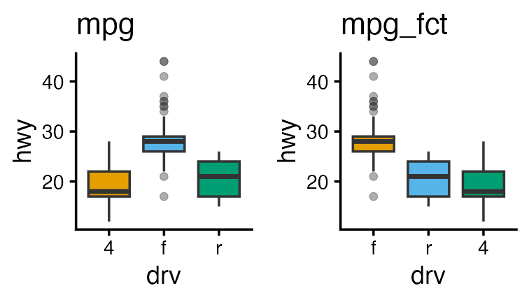
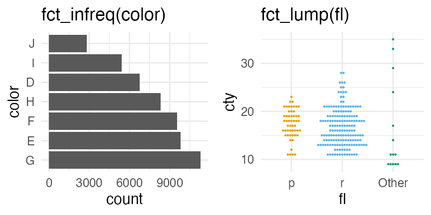
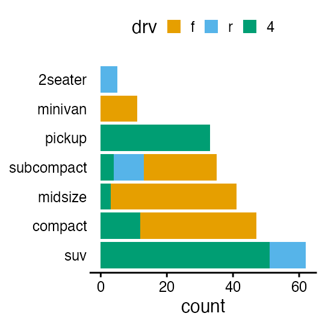

進化学実習 2026 牧野研 東北大学
- 導入: データ解析の全体像。Rの基本。
- データの可視化。
- データ構造の処理1: 抽出、集約など。
- データ構造の処理2: 結合、変形など。
- データ内容の処理: 数値、文字列など。
- データ入力、レポート作成
- 統計モデリング1: 確率分布、尤度
- 統計モデリング2: 一般化線形モデル
- 発表会
https://heavywatal.github.io/slides/tohoku2026r/
作業再開、出欠確認
r-training-2026.Rprojをダブルクリック。
正しい working directory でRStudioが起動される。- 初日と同じ手順で出欠確認。
- 今日のぶんのスクリプトを新規作成し、好きな名前で保存。
- tidyverseの読み込みやパレット設定など、 おまじないをまず実行。
前回までのまとめ
✅ Rの基礎
- 調べ方さえわかれば、全部覚えなくても大丈夫
- エラーは日常茶飯事。落ち着いて読み取ろう
- まずRスクリプトに書いてから、コンソールで実行
- 便利なパッケージを使おう
✅ データ解析全体の流れ。可視化だいじ
✅ 一貫性のある文法で合理的に描けるggplot2
✅ 使える整然データにするための前処理がたいへん
データ解析のおおまかな流れ
- コンピュータ環境の整備 ✅
- データの取得、読み込み ⬜
- 探索的データ解析
- 前処理、加工 (地味。意外と重い) ⬜ 👈 今回の主題
- 可視化、仮説生成 (派手！だいじ！) ✅ 完全に理解した
- 統計解析、仮説検証 (みんな勉強したがる) ⬜
- 報告、発表 ⬜ Quarto楽しい

前処理は大きく2つに分けられる


- データ構造を対象とする処理 — 第3, 4回
- 使いたい部分だけ抽出 —
select(),filter() - グループごとに特徴を要約 —
group_by(),summarize() - 何かの順に並べ替え —
arrange(),relocate() - 異なるテーブルの結合 —
*_join() - 変形: 縦長 ↔ 横広 —
pivot_longer(),pivot_wider()
- 使いたい部分だけ抽出 —
- データ内容を対象とする処理 👈 第5回 本日の話題
- 数値の変換: 対数、正規化
- 外れ値・欠損値への対処
- 型変換: 連続変数、カテゴリカル変数、指示変数、因子、日時
- 文字列処理: 正規表現によるパターンマッチ
tidyverse: データ科学のためのパッケージ群

# install.packages("tidyverse") # 済んでるはず
library(conflicted) # 安全のおまじない
library(tidyverse) # 一挙に読み込み
── Attaching core tidyverse packages ──── tidyverse 2.0.0 ──
✔ dplyr 1.2.1 ✔ readr 2.2.0
✔ forcats 1.0.1 ✔ stringr 1.6.0
✔ ggplot2 4.0.2 ✔ tibble 3.3.1
✔ lubridate 1.9.5 ✔ tidyr 1.3.2
✔ purrr 1.2.1
一貫したデザインでデータ解析の様々な工程をカバー
変数/オブジェクトの型 (復習)
vector: 基本型。一次元の配列。 (👈今回の主役)logical: 論理値 (TRUEorFALSE)numeric: 数値 (整数42Lor 実数3.1416)character: 文字列 ("a string")factor: 因子 (文字列っぽいけど微妙に違う)
array: 多次元配列。vector同様、全要素が同じ型。matrix: 行列 = 二次元の配列。
list: 異なる型でも詰め込める太っ腹ベクトル。data.frame: 同じ長さのベクトルを並べた長方形のテーブル。重要。
tibbleとかtbl_dfと呼ばれる亜種もあるけどほぼ同じ。
vector: 一次元の配列 (復習)
1個の値でもベクトル扱い。
ベクトルの各要素に一気に計算を適用できる。
x = c(1, 2, 9) # 長さ3の数値ベクトル
x + x # 同じ長さ同士の計算
[1] 2 4 18
y = 10 # 長さ1の数値ベクトル
x + y # 長さ3 + 長さ1 = 長さ3 (それぞれ足し算)
[1] 11 12 19
x < 5 # それぞれの要素を比較
[1] TRUE TRUE FALSE
数値: numeric型
普通は倍精度浮動小数点型 double として扱われる:
answer = 42
typeof(answer)
[1] "double"
明示的に変換したり末尾にLを付けることで整数扱いもできる:
typeof(as.integer(answer))
[1] "integer"
whoami = 24601L
typeof(whoami)
[1] "integer"
Rではほとんど気にする必要はない。
様々な数学関数
ベクトルを受け取り、それぞれの要素に適用
x = c(1, 2, 3)
sqrt(x)
[1] 1.000000 1.414214 1.732051
log(x)
[1] 0.0000000 0.6931472 1.0986123
log10(x)
[1] 0.0000000 0.3010300 0.4771213
exp(x)
[1] 2.718282 7.389056 20.085537
https://stat.ethz.ch/R-manual/R-patched/library/base/html/00Index.html
data.frameは列vectorの集まり
内容を変更する方法はいくつかある。
diamonds の price 列をドルから円に変換する例:
dia = diamonds # 別名コピー
# dollar演算子 $ で指定
dia$price = 146.8 * dia$price
# 名前を [[文字列]] で指定
dia[["price"]] = 146.8 * dia[["price"]]
# dplyr::mutate with pipe
dia = diamonds |>
dplyr::mutate(price = 146.8 * price) |>
dplyr::filter(carat > 1) |>
dplyr::summarize(avg_price = mean(price))
1発ならどれでもいい。流れ作業には mutate() が便利。
欠損値の除去 tidyr::drop_na()
(指定した列に) 欠損値 NA が含まれてる行を削除する。
df = tibble::tibble(x = c(1, 2, NA), y = c("a", NA, "c"), z = c("D", "E", NA))
df |> tidyr::drop_na()
x y z
1 1 a D
🔰 starwars で身長体重データのある行だけ抽出してみよう
name height mass hair_color skin_color eye_color birth_year sex gender homeworld species films vehicles starships
1 Luke Skywalker 172 77 blond fair blue 19.0 male masculine Tatooine Human <chr [5]> <chr [2]> <chr [2]>
2 C-3PO 167 75 <NA> gold yellow 112.0 none masculine Tatooine Droid <chr [6]> <chr [0]> <chr [0]>
3 R2-D2 96 32 <NA> white, blue red 33.0 none masculine Naboo Droid <chr [7]> <chr [0]> <chr [0]>
4 Darth Vader 202 136 none white yellow 41.9 male masculine Tatooine Human <chr [4]> <chr [0]> <chr [1]>
--
56 Tarfful 234 136 brown brown blue NA male masculine Kashyyyk Wookiee <chr [1]> <chr [0]> <chr [0]>
57 Raymus Antilles 188 79 brown light brown NA male masculine Alderaan Human <chr [2]> <chr [0]> <chr [0]>
58 Sly Moore 178 48 none pale white NA <NA> <NA> Umbara <NA> <chr [2]> <chr [0]> <chr [0]>
59 Tion Medon 206 80 none grey black NA male masculine Utapau Pau'an <chr [1]> <chr [0]> <chr [0]>
欠損値の補完 tidyr::replace_na()
欠損値 NA を任意の値で置き換える。
df = tibble::tibble(x = c(1, 2, NA), y = c("a", NA, "c"), z = c("D", "E", NA))
df |> tidyr::replace_na(list(x = 9999, y = "unknown"))
x y z
1 1 a D
2 2 unknown E
3 9999 c <NA>
🔰 starwars で髪色と出身地が不明の部分を"!!“に置換しよう
name height mass hair_color skin_color eye_color birth_year sex gender homeworld species films vehicles starships
1 Luke Skywalker 172 77 blond fair blue 19.0 male masculine Tatooine Human <chr [5]> <chr [2]> <chr [2]>
2 C-3PO 167 75 !! gold yellow 112.0 none masculine Tatooine Droid <chr [6]> <chr [0]> <chr [0]>
3 R2-D2 96 32 !! white, blue red 33.0 none masculine Naboo Droid <chr [7]> <chr [0]> <chr [0]>
4 Darth Vader 202 136 none white yellow 41.9 male masculine Tatooine Human <chr [4]> <chr [0]> <chr [1]>
--
84 Rey NA NA brown light hazel NA female feminine !! Human <chr [1]> <chr [0]> <chr [0]>
85 Poe Dameron NA NA brown light brown NA male masculine !! Human <chr [1]> <chr [0]> <chr [1]>
86 BB8 NA NA none none black NA none masculine !! Droid <chr [1]> <chr [0]> <chr [0]>
87 Captain Phasma NA NA none none unknown NA female feminine !! Human <chr [1]> <chr [0]> <chr [0]>
欠損値とみなす dplyr::na_if()
特定の値を NA に置き換える:
df = tibble::tibble(x = c(1, 2, NA), y = c("a", NA, "c"), z = c("D", "E", NA))
df |> dplyr::mutate(x = dplyr::na_if(x, 1), y = dplyr::na_if(y, "a"))
x y z
1 NA <NA> D
2 2 <NA> E
3 NA c <NA>
🔰 starwars の髪色と肌色の"none"を欠損値にしよう
name height mass hair_color skin_color eye_color birth_year sex gender homeworld species films vehicles starships
1 Luke Skywalker 172 77 blond fair blue 19.0 male masculine Tatooine Human <chr [5]> <chr [2]> <chr [2]>
2 C-3PO 167 75 <NA> gold yellow 112.0 none masculine Tatooine Droid <chr [6]> <chr [0]> <chr [0]>
3 R2-D2 96 32 <NA> white, blue red 33.0 none masculine Naboo Droid <chr [7]> <chr [0]> <chr [0]>
4 Darth Vader 202 136 <NA> white yellow 41.9 male masculine Tatooine Human <chr [4]> <chr [0]> <chr [1]>
--
84 Rey NA NA brown light hazel NA female feminine <NA> Human <chr [1]> <chr [0]> <chr [0]>
85 Poe Dameron NA NA brown light brown NA male masculine <NA> Human <chr [1]> <chr [0]> <chr [1]>
86 BB8 NA NA <NA> <NA> black NA none masculine <NA> Droid <chr [1]> <chr [0]> <chr [0]>
87 Captain Phasma NA NA <NA> <NA> unknown NA female feminine <NA> Human <chr [1]> <chr [0]> <chr [0]>
欠損値の補完 dplyr::coalesce()
先に指定したvectorの値が NA なら次のvectorの値を採用:
df = tibble::tibble(x = c(1, 2, NA), y = c("a", NA, "c"), z = c("D", "E", NA))
df |> dplyr::mutate(y_or_z = dplyr::coalesce(y, z))
x y z y_or_z
1 1 a D a
2 2 <NA> E E
3 NA c <NA> c
異なる型を混ぜると怒られる:
df |> dplyr::mutate(x_or_y = dplyr::coalesce(x, y))
Error in `dplyr::mutate()`:
ℹ In argument: `x_or_y = dplyr::coalesce(x, y)`.
Caused by error in `dplyr::coalesce()`:
! Can't combine `..1` <double> and `..2` <character>.
🔰 starwars で髪色の欠損値を肌色で補おう
name height mass hair_color skin_color eye_color birth_year sex gender homeworld species films vehicles starships
1 Luke Skywalker 172 77 blond fair blue 19.0 male masculine Tatooine Human <chr [5]> <chr [2]> <chr [2]>
2 C-3PO 167 75 gold gold yellow 112.0 none masculine Tatooine Droid <chr [6]> <chr [0]> <chr [0]>
3 R2-D2 96 32 white, blue white, blue red 33.0 none masculine Naboo Droid <chr [7]> <chr [0]> <chr [0]>
4 Darth Vader 202 136 none white yellow 41.9 male masculine Tatooine Human <chr [4]> <chr [0]> <chr [1]>
--
84 Rey NA NA brown light hazel NA female feminine <NA> Human <chr [1]> <chr [0]> <chr [0]>
85 Poe Dameron NA NA brown light brown NA male masculine <NA> Human <chr [1]> <chr [0]> <chr [1]>
86 BB8 NA NA none none black NA none masculine <NA> Droid <chr [1]> <chr [0]> <chr [0]>
87 Captain Phasma NA NA none none unknown NA female feminine <NA> Human <chr [1]> <chr [0]> <chr [0]>
条件に応じて値を選択 dplyr::if_else()
TRUE の位置では x を採用、FALSE の位置では y を採用:
condition = c(TRUE, TRUE, FALSE)
x = c(1, 2, 3)
y = c(100, 200, 300)
dplyr::if_else(condition, x, y)
[1] 1 2 300
🔰 starwars で種族がドロイドの行だけ身長を100倍してみよう
name height mass hair_color skin_color eye_color birth_year sex gender homeworld species films vehicles starships
1 Luke Skywalker 172 77 blond fair blue 19.0 male masculine Tatooine Human <chr [5]> <chr [2]> <chr [2]>
2 C-3PO 16700 75 <NA> gold yellow 112.0 none masculine Tatooine Droid <chr [6]> <chr [0]> <chr [0]>
3 R2-D2 9600 32 <NA> white, blue red 33.0 none masculine Naboo Droid <chr [7]> <chr [0]> <chr [0]>
4 Darth Vader 202 136 none white yellow 41.9 male masculine Tatooine Human <chr [4]> <chr [0]> <chr [1]>
--
84 Rey NA NA brown light hazel NA female feminine <NA> Human <chr [1]> <chr [0]> <chr [0]>
85 Poe Dameron NA NA brown light brown NA male masculine <NA> Human <chr [1]> <chr [0]> <chr [1]>
86 BB8 NA NA none none black NA none masculine <NA> Droid <chr [1]> <chr [0]> <chr [0]>
87 Captain Phasma NA NA none none unknown NA female feminine <NA> Human <chr [1]> <chr [0]> <chr [0]>
文字列: character型 (string)
ダブルクォートで囲む。シングルクォートも使える。
x = "This is a string"
y = 'If I want to include a "quote" inside a string, I use single quotes'
閉じそびれると変な状態になるので、落ち着いて esc or ctrlc
> "This is a string without a closing quote
+
+
+ HELP I'M STUCK
R備え付けの文字列機能は使いにくい
-
何をやる関数なのか名前から分かりにくい:
grep,grepl,regexpr,gregexpr,regexec
sub,gsub,substr,substring -
対象文字列はいくつめに渡す？関数ごとに違う:
grep(pattern, x, ...) sub(pattern, replacement, x, ...) substr(x, start, stop) -
欠損値
NAに対する挙動が微妙:x = c(1, 2, NA) y = c("a", NA, "c") paste(x, y) # NA is not distinguished from character "NA"[1] "1 a" "2 NA" "NA c"
stringr — tidyverseの文字列処理担当

- 関数や引数の名前に一貫性があって分かりやすい
- 対象文字列が一貫して第一引数なので
|>able - 引数オブジェクトの各要素の名前や位置を保持する
- 長さゼロの入力からは長さゼロの出力
- 入力に
NAが含まれる場合は対応する出力もNA
- 公式ドキュメントを見れば全容が掴める


文字列の基本操作
fruit4 = head(fruit, 4L) |> print()
[1] "apple" "apricot" "avocado" "banana"
stringr::str_length(fruit4) # 長さ
[1] 5 7 7 6
stringr::str_sub(fruit4, 2, 4) # 部分抽出
[1] "ppl" "pri" "voc" "ana"
stringr::str_c(1:4, " ", fruit4, "!") # 結合
[1] "1 apple!" "2 apricot!" "3 avocado!" "4 banana!"
🔰 words の中で9文字より長いものを抜き出してみよう
🔰 それら長い単語に str_sub() や str_c() を適用してみよう
パターンマッチング
単純な一致だけじゃなく、いろんな条件でマッチングできる:
# aで始まる
stringr::str_subset(fruit, "^a")
[1] "apple" "apricot" "avocado"
# rで終わる
stringr::str_subset(fruit, "r$")
[1] "bell pepper" "chili pepper" "cucumber" "pear"
# 英数字3-4文字
stringr::str_subset(fruit, "^\\w{3,4}$")
[1] "date" "fig" "lime" "nut" "pear" "plum"
この ^ とか $ って何者？
正規表現: 柔軟な検索・置換を可能にするツール
| メタ文字 | 意味 | 演算子 | 意味 | |
|---|---|---|---|---|
\d |
数字 (逆は \D) |
a? |
0回か1回のa | |
\s |
空白 (逆は \S) |
a* |
0回以上繰り返されたa | |
\w |
英数字 (逆は \W) |
a+ |
1回以上繰り返されたa | |
. |
何でも1文字 | a{n,m} |
n回以上m回以下のa | |
^ |
行頭 | a(?=c) |
cに先立つa | |
$ |
行末 | (?<=b)a |
bに続くa |
https://unicode-org.github.io/icu/userguide/strings/regexp.html#regular-expression-metacharacters
Rの"普通の文字列"ではバックスラッシュを重ねる必要がある: "^\\d".
正規表現: チートシート
正規表現: 練習問題
🔰 str_subset() と fruit でパターンマッチを身に着けよう:
- “o” を含むもの
- “o” で始まるもの
- “berry” で終わるもの
- “c” で始まり “r” で終わるもの
- 空白を含むもの、含まないもの
🔰 starnames = starwars[["name"]] として次のマッチにも挑戦:
- 数字を含むもの、含まないもの
- 3語以上のもの
- 小文字アルファベットを含まないもの
検出 str_detect()
マッチするかどうか TRUE/FALSE を返す。
fruit4 = head(fruit, 4L)
stringr::str_detect(fruit4, "^a")
[1] TRUE TRUE TRUE FALSE
🔰 starwars から name 列に空白を含まない行を抽出しよう
name height mass hair_color skin_color eye_color birth_year sex gender homeworld species films vehicles starships
1 C-3PO 167 75 <NA> gold yellow 112 none masculine Tatooine Droid <chr [6]> <chr [0]> <chr [0]>
2 R2-D2 96 32 <NA> white, blue red 33 none masculine Naboo Droid <chr [7]> <chr [0]> <chr [0]>
3 R5-D4 97 32 <NA> white, red red NA none masculine Tatooine Droid <chr [1]> <chr [0]> <chr [0]>
4 Chewbacca 228 112 brown unknown blue 200 male masculine Kashyyyk Wookiee <chr [5]> <chr [1]> <chr [2]>
--
21 Tarfful 234 136 brown brown blue NA male masculine Kashyyyk Wookiee <chr [1]> <chr [0]> <chr [0]>
22 Finn NA NA black dark dark NA male masculine <NA> Human <chr [1]> <chr [0]> <chr [0]>
23 Rey NA NA brown light hazel NA female feminine <NA> Human <chr [1]> <chr [0]> <chr [0]>
24 BB8 NA NA none none black NA none masculine <NA> Droid <chr [1]> <chr [0]> <chr [0]>
抽出 str_extract()
マッチした部分文字列を取り出す。しなかった要素には NA。
fruit4 = head(fruit, 4L)
stringr::str_extract(fruit4, "^a..")
[1] "app" "apr" "avo" NA
🔰 starwars の name 列をファーストネームだけにしてみよう
name height mass hair_color skin_color eye_color birth_year sex gender homeworld species films vehicles starships
1 Luke 172 77 blond fair blue 19.0 male masculine Tatooine Human <chr [5]> <chr [2]> <chr [2]>
2 C-3PO 167 75 <NA> gold yellow 112.0 none masculine Tatooine Droid <chr [6]> <chr [0]> <chr [0]>
3 R2-D2 96 32 <NA> white, blue red 33.0 none masculine Naboo Droid <chr [7]> <chr [0]> <chr [0]>
4 Darth 202 136 none white yellow 41.9 male masculine Tatooine Human <chr [4]> <chr [0]> <chr [1]>
--
84 Rey NA NA brown light hazel NA female feminine <NA> Human <chr [1]> <chr [0]> <chr [0]>
85 Poe NA NA brown light brown NA male masculine <NA> Human <chr [1]> <chr [0]> <chr [1]>
86 BB8 NA NA none none black NA none masculine <NA> Droid <chr [1]> <chr [0]> <chr [0]>
87 Captain NA NA none none unknown NA female feminine <NA> Human <chr [1]> <chr [0]> <chr [0]>
置換 str_replace(), str_replace_all()
カッコ () で囲んだマッチングは後で参照できる:
fruit4 = head(fruit, 4L)
stringr::str_replace(fruit4, "..$", "!!")
[1] "app!!" "apric!!" "avoca!!" "bana!!"
stringr::str_replace(fruit4, "(..)$", "_\\1_")
[1] "app_le_" "apric_ot_" "avoca_do_" "bana_na_"
🔰 starwars の name 列の数字を全部ゼロにしてみよう
name height mass hair_color skin_color eye_color birth_year sex gender homeworld species films vehicles starships
1 C-0PO 167 75 <NA> gold yellow 112 none masculine Tatooine Droid <chr [6]> <chr [0]> <chr [0]>
2 R0-D0 96 32 <NA> white, blue red 33 none masculine Naboo Droid <chr [7]> <chr [0]> <chr [0]>
3 R0-D0 97 32 <NA> white, red red NA none masculine Tatooine Droid <chr [1]> <chr [0]> <chr [0]>
4 IG-00 200 140 none metal red 15 none masculine <NA> Droid <chr [1]> <chr [0]> <chr [0]>
5 R0-P00 96 NA none silver, red red, blue NA none feminine <NA> Droid <chr [2]> <chr [0]> <chr [0]>
6 BB0 NA NA none none black NA none masculine <NA> Droid <chr [1]> <chr [0]> <chr [0]>
dplyr, tidyr の列選択などでも活躍
matches() だけで starts_with()/ends_with() の役もこなせる:
# starts_with("c")
diamonds |> dplyr::select(matches("^c"))
# ends_with("s")
starwars |> dplyr::select(matches("s$"))
# 数字だけ
table4a |>
tidyr::pivot_longer(matches("^\\d+$"), names_to = "year")
See selection helpers for more details.
形式を変える・整える
fruit4 = head(fruit, 4L)
stringr::str_to_upper(fruit4) # 大文字に
[1] "APPLE" "APRICOT" "AVOCADO" "BANANA"
stringr::str_pad(fruit4, 8, "left", "_") # 幅を埋めて指定幅に
[1] "___apple" "_apricot" "_avocado" "__banana"
stringr::str_trim(" word ") # 前後のスペースを除去
[1] "word"
stringi パッケージはさらに多機能
stringi::stri_trans_nfkc(c("ｶﾀｶﾅ", "４２")) # 半角カナ・全角数字に対処
[1] "カタカナ" "42"
↑ これ、日本語データの掃除でかなり重宝する
文字列から別の型に

これはstringrではなくreadrの担当:
readr::parse_number(c("p = 0.02 *", "N_A = 6e23"))
[1] 2e-02 6e+23
readr::parse_double(c("0.02", "6e+23"))
[1] 2e-02 6e+23
readr::parse_logical(c("1", "true", "0", "false"))
[1] TRUE TRUE FALSE FALSE
readr::parse_date("2020-06-03")
[1] "2020-06-03"
6e+23 は $6 \times 10 ^ {23}$ のプログラミング的表現。
$6e^{23}$ ではない。
因子型 factor でカテゴリカル変数(質的変数)を扱う
month_levels = c( # 取りうる値
"Jan", "Feb", "Mar", "Apr", "May", "Jun",
"Jul", "Aug", "Sep", "Oct", "Nov", "Dec"
)
x1 = c("Dec", "Apr", "Jan", "Mar") # ただの文字列vector
y1 = factor(x1, levels = month_levels) # 因子型に変換
print(y1)
[1] Dec Apr Jan Mar
Levels: Jan Feb Mar Apr May Jun Jul Aug Sep Oct Nov Dec
文字列っぽいけど実体は整数:
typeof(y1)
[1] "integer"
as.integer(y1) # 整数型に変換可能
[1] 12 4 1 3
🔰 iris に含まれる因子型を確認しよう: str(iris)
因子型 factor: 文字列との違い1
取りうる値 (levels) が既知。
typoなどによりlevels外になると NA 扱い。
x2 = c("Dec", "Apr", "Jam", "Mar")
factor(x2, levels = month_levels)
[1] Dec Apr <NA> Mar
Levels: Jan Feb Mar Apr May Jun Jul Aug Sep Oct Nov Dec
元の文字列vectorに全てのlevelsが含まれてるなら簡単に変換可能:
as.factor(starwars[["gender"]])
[1] masculine masculine masculine masculine feminine masculine feminine masculine masculine masculine masculine masculine masculine masculine masculine masculine masculine <NA> masculine masculine masculine masculine masculine masculine masculine masculine feminine masculine masculine masculine masculine masculine masculine feminine masculine masculine masculine masculine masculine masculine masculine feminine masculine masculine feminine masculine masculine masculine masculine masculine masculine masculine masculine feminine masculine masculine masculine masculine <NA> <NA> masculine masculine feminine feminine feminine masculine masculine masculine feminine masculine masculine feminine feminine feminine masculine masculine feminine masculine masculine masculine <NA> masculine masculine feminine masculine masculine feminine
Levels: feminine masculine
因子型 factor: 文字列との違い2
アルファベット順じゃない順序がある:
x1 = c("Dec", "Apr", "Jan", "Mar")
sort(x1) # 文字列としてソートするとアルファベット順
[1] "Apr" "Dec" "Jan" "Mar"
y1 = factor(x1, levels = month_levels)
sort(y1) # 因子としてソートするとlevels順
[1] Jan Mar Apr Dec
Levels: Jan Feb Mar Apr May Jun Jul Aug Sep Oct Nov Dec
因子型 factor: 順序の情報は作図で生きる
文字列だと勝手にアルファベット順。因子型なら任意指定可能:
mpg_fct = mpg |>
dplyr::mutate(drv = factor(drv, levels = c("f", "r", "4")))

順序つき因子型 ordered
大小の比較ができる。
x1 = c("Dec", "Apr", "Jan", "Mar")
y3 = factor(x1, levels = month_levels, ordered = TRUE)
class(y3)
[1] "ordered" "factor"
print(y3)
[1] Dec Apr Jan Mar
Levels: Jan < Feb < Mar < Apr < May < Jun < Jul < Aug < Sep < Oct < Nov < Dec
y3 < "Sep"
[1] FALSE TRUE TRUE TRUE
🔰 diamonds に含まれるordered型を確認しよう: str(diamonds)
🔰 cut がPremium以上の行だけ抜き出す、とか。
tidyverse の因子型担当は forcats

# 頻度に応じて順序を並べ替え
diamonds |>
dplyr::mutate(color = forcats::fct_infreq(color))
# 少なすぎるカテゴリを"その他"としてまとめる
mpg |>
dplyr::mutate(fl = forcats::fct_lump(fl, n = 2))

ほかに fct_reorder(), fct_relevel() なども。
公式サイト参照。
factorで順序を変えて作図する練習
🔰 mpg で次のような図を描いてみよう

ヒント: 使うのは geom_bar()
日時型: POSIXct, POSIXlt
- POSIXct: エポックからの経過秒数。比較や差分などを取りやすい。
- POSIXlt: list(秒, 分, 時, 日, 月, 年, …)。単位ごとに抜き出しやすい。
now = "2026-04-13 15:30:00"
ct = as.POSIXct(now)
unclass(ct)
[1] 1776061800
attr(,"tzone")
[1] ""
lt = as.POSIXlt(now)
unclass(lt) |> as_tibble()
sec min hour mday mon year wday yday isdst zone gmtoff
1 0 30 15 13 3 126 1 102 0 JST NA
素のRでも扱えるけど lubridate パッケージを使うともっと楽に。
lubridate — 日時型処理パッケージ

日時型への変換:
lubridate::ymd(c("20260413", "2026-04-13", "24/04/13"))
[1] "2026-04-13" "2026-04-13" "2024-04-13"
日時型から単位ごとに値を取得:
today = lubridate::ymd(20260413)
lubridate::month(today)
[1] 4
lubridate::wday(today, label = TRUE)
[1] Mon
Levels: Sun < Mon < Tue < Wed < Thu < Fri < Sat
データ内容を対象とする処理 | まとめ
- 正規化・欠損値処理は目的に応じて検討
- vectorには型がある: 文字列、数値、因子、日時、etc.
- 文字列を扱うには stringr
- 正規表現は一度習得すれば超強力
- 因子を扱うには forcats
- 知っておくとたまに便利。苦手なら全部文字列にしてもいい。
- 日時を扱うには lubridate
各パッケージのチートシート.pdfを手元に持っておくと便利。
前処理に必要な道具はだいたい揃った
- データ構造を対象とする処理 — 第3, 4回
- 使いたい部分だけ抽出 —
select(),filter() - グループごとに特徴を要約 —
group_by(),summarize() - 何かの順に並べ替え —
arrange(),relocate() - 異なるテーブルの結合 —
*_join() - 変形: 縦長 ↔ 横広 —
pivot_longer(),pivot_wider()
- 使いたい部分だけ抽出 —
- データ内容を対象とする処理 — 👈 第5回 本日の話題
- 数値の変換: 対数、正規化
- 外れ値・欠損値への対処
- 型変換: 連続変数、カテゴリカル変数、指示変数、因子、日時
- 文字列処理: 正規表現によるパターンマッチ
🔰 3日目の課題1: 組み込みデータをいじくり倒してみよう
- データを1人1つ選び、作図して読み取れることを一言。
- 前処理でいろいろなパッケージ・関数を駆使するほど良い。
dplyr::storms
dplyr::starwars
tidyr::billboard
tidyr::cms_patient_experience
tidyr::cms_patient_care
tidyr::relig_income
tidyr::us_rent_income
tidyr::who
tidyr::population
tidyr::world_bank_pop
forcats::gss_cat
lubridate::lakers
ggplot2::midwest
ggplot2::msleep
ggplot2::txhousing
Reference
- R for Data Science — Hadley Wickham et al.
- https://r4ds.hadley.nz, Paperback, 日本語版書籍
前処理大全 — 本橋智光
RユーザのためのRStudio[実践]入門 (宇宙船本) — 松村ら
- Official documents:
- tidyverse, dplyr, tidyr, stringr, forcats, lubridate
- Other versions
- 「Rにやらせて楽しよう — データの可視化と下ごしらえ」 岩嵜航 2018
- 「Rを用いたデータ解析の基礎と応用」 石川由希 名古屋大学
- 「Rによるデータ前処理実習」 岩嵜航 2024 東京医科歯科大